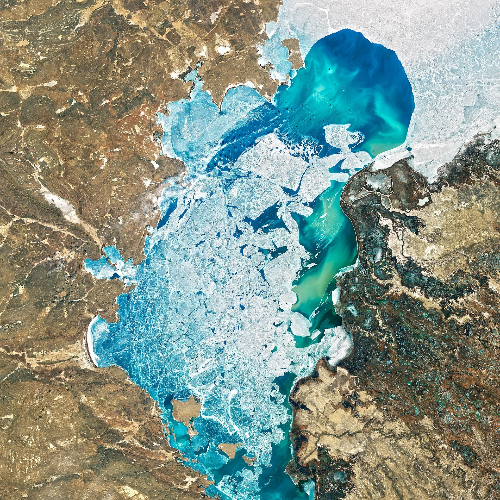

Казахстан построит первую АЭС: контракт EPC с «Росатомом» на $16,5 млрд
3 сентября 2026 года «Росатом» и KNPP подписали EPC-контракт на первую АЭС Казахстана. На Балхаше построят два блока ВВЭР-1200 (2 400 МВт); Россия профинансирует ~85%.

3 сентября 2026 года на полях Восточного экономического форума во Владивостоке российская госкорпорация «Росатом» (через дочернюю компанию «Атомстройэкспорт») и Kazakhstan Nuclear Power Plants (KNPP) подписали EPC-контракт (проектирование, поставки, строительство) на первую атомную электростанцию Казахстана.
Где и как
Станцию построят у посёлка Улкен в Жамбылском районе Алматинской области, на озере Балхаш. Проект предусматривает два реактора ВВЭР-1200 поколения III+ суммарной мощностью 2 400 МВт. «Росатом» возглавляет международный консорциум, отвечающий за полный цикл строительства.
Стоимость и финансирование
По данным источников, ориентировочная стоимость — ~$16,4–16,5 млрд (около $14,4 млрд на два блока и ~$2 млрд на физическую безопасность и социальную инфраструктуру). Ожидается, что Россия профинансирует около 85% через государственный экспортный кредит на «очень выгодных условиях»; глава атомного агентства Казахстана Алмасадам Саткалиев в мае заявил, что условия «очень выгодны для Казахстана».
Сроки
Начало строительства намечено на 2027 год; первый блок ожидается примерно в 2034 году по данным World Nuclear News, полное завершение — в 2035–2036 годах (источники немного расходятся по датам — WNN указывает 2034, ТАСС/чиновники 2035–2036).
Зачем строят
Строительство было одобрено на общенациональном референдуме 2024 года, а межправительственное соглашение подписано в мае 2026 года. В качестве обоснования называют дефицит электроэнергии: по данным Times of Central Asia, в январе 2025 года он достиг около 5,7 млрд кВт·ч.
Зависимость от России и фактор Китая
Сделка углубляет энергетическую зависимость Казахстана от России. При этом Астана ведёт переговоры с китайской CNNC о второй и третьей станциях, что рассматривается как попытка диверсифицировать поставщиков.
Подписанный документ знаменует новый этап в нашем сотрудничестве с Казахстаном.
— Алексей Лихачёв, генеральный директор «Росатома» (Владивосток, 3 сентября 2026)
В цифрах
- Реакторы: 2 × ВВЭР-1200 (III+), 2 400 МВт
- Ориентировочная стоимость: ~$16,4–16,5 млрд
- Финансирование России: ~85% (экспортный кредит)
- Начало строительства: 2027
- Первый блок: ~2034 (полностью: ~2035–2036)
- Расположение: Улкен, озеро Балхаш, Алматинская область
- Дефицит электроэнергии (янв 2025): ~5,7 млрд кВт·ч
- Станции 2 и 3: переговоры с Китаем (CNNC)
- Референдум: 2024 (одобрено)